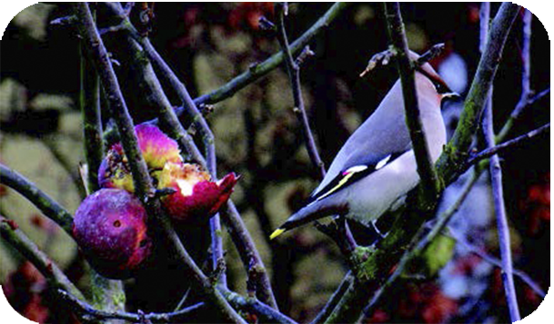
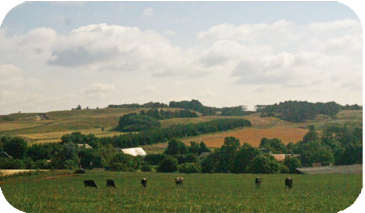
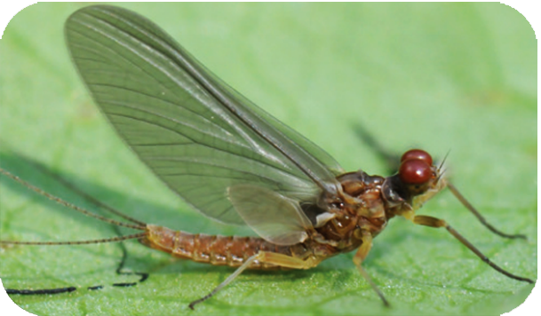
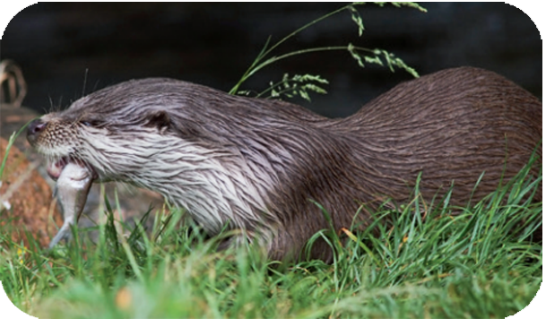
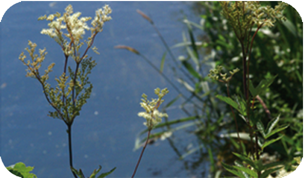
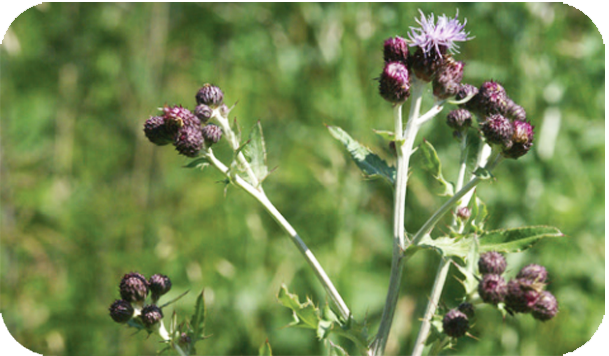
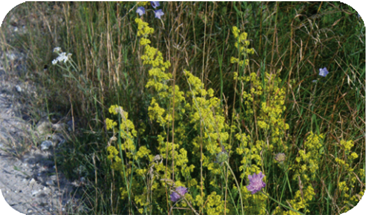
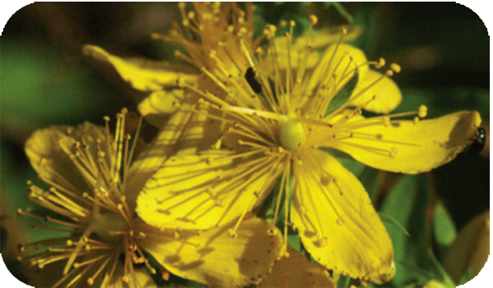

Bjergbanestien




The water in Hasseris Å and Binderup Å is very clean and oxygen-rich,
which provides ideal living conditions for a wide range animals and
insects, but also brown trout and other fish thrive here.
Several species of beetles, houseflies and springflies have been found,
such as only found in streams with fine water quality.
Several times are otters seen by the rivers.




The plants along the path contain many species. Within a shorter distance, there is great variation between the species. Some thrive at the top of the railway dam, where the shard under the railway sleepers has created a very dry soil.